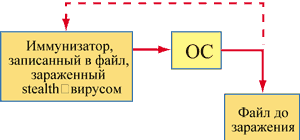
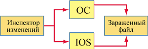
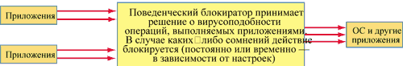

Статья подготовлена по материалам компании "Лаборатория Касперского".
Сегодня с основными правилами антивирусной гигиены знакомы почти все пользователи и системные администраторы. Но ни регулярное обновление антивирусных баз, ни своевременная установка всех "сервис-паков" не могут гарантировать 100%-ной безопасности. С определенной погрешностью (в окрестности 3%) эффективность стационарных антивирусных средств (к ним относятся модули, использующие антивирусные базы данных) можно оценить в 90%. Именно об оставшихся 10% и пойдет разговор.
Любой компьютер более всего уязвим в момент между появлением нового вируса и установкой обновления антивирусного ПО, защищающего от этого вируса. К безусловным плюсам сегодняшнего дня относятся скорость доставки обновлений на удаленные компьютеры (благодаря Интернету ежедневное обновление можно переписать за несколько секунд), круглосуточная техническая поддержка и оперативный выпуск самих обновлений (вакцина к опасному вирусу появляется в тот же день, когда вирус попал "на стол" к аналитикам). Еще несколько лет назад эти ресурсы могли бы свести на нет любую вирусную эпидемию и гарантированно добавить дополнительные 9% к уже имеющимся 90% защиты. Но технический прогресс имеет и обратную сторону: сегодня вирусы, такие, как Интернет-черви, способны распространяться по всему миру за считанные секунды и вызывать глобальные эпидемии за сутки своей "жизни на свободе".
Таким образом, задачи эффективной борьбы с вирусами не сводятся только к повышению уровня сервиса для клиентов антивирусных компаний и к соблюдению нескольких догматических правил на все случаи жизни. Проблема лежит в самой технологии.
Каждому из существующих ныне подходов, позволяющих обеспечить тот или иной уровень защищенности от еще неизвестных угроз, соответствует дополнительный антивирусный модуль. К ним относят инспекторы изменений, поведенческие блокираторы и эвристические анализаторы (их можно рассматривать и как часть сканеров, так как эвристики не пользуются базами). Когда-то в этот "первый эшелон" входили еще и иммунизаторы, но время доказало их непригодность для современной жизни; как именно, мы обсудим ниже.
Иммунизаторы
Понимание механизма работы иммунизаторов и причин их несостоятельности поможет читателю лучше разобраться с современными технологиями в целом. В конце концов, некоторые самые перспективные технологии сегодняшнего дня - прямые потомки иммунизаторов.
Алгоритм работы иммунизатора таков: он копирует свое тело в конец некоторых исполняемых файлов - либо критичных с точки зрения безопасности, либо выбранных пользователем. Далее модифицируется точка входа в приложение так, чтобы при запуске файла управление получал иммунизатор. В принципе такие действия сродни тому, что делают вирусы. Теперь при каждом выполнении приложения иммунизатор проверяет целостность своего "файла-донора". Естественно, первоначальные данные, соответствующие "чистым" файлам, хранятся у самого анализатора. Чаще всего в этом качестве выступает CRC-сумма, которая служит аналогом человеческих отпечатков пальцев для программ.
Уязвимость такого подхода продемонстрировали stealth-вирусы. Основное их оружие - скрытность и возможность обмана любых программ при обращении к инфицированным объектам. Иммунизатор использует системные прерывания для обращения к файлам, т. е. просит ОС предоставить данные из файла. Но stealth-вирус контролирует прерывания ОС и успевает перенаправить чтение данных на другой, незараженный файл (рис. 1). Таким образом, иммунизаторы оказываются в положении слепого крота, запертого в герметичной комнате, а вирус остается невидимкой. Сегодня нет ни одного известного антивирусного пакета, в состав которого входил бы иммунизатор.
|  | Рис. 1. Логика работы вирусов типа stealth.
|
Некоторое время были также популярны иммунизаторы другой разновидности - те, которые симулировали состоявшееся заражение файлов, тем самым отваживая вирусы от проникновения в них. Например, хорошо известный в 80-е годы вирус Jerusalem никогда дважды не заражал один и тот же файл. Он метил уже пораженные объекты меткой "MSDOS", а затем, обнаруживая ее, пропускал помеченный файл. Буквально сразу же появились многочисленные иммунизаторы, которые метили все исполняемые файлы в системе, так что Jerusalem, попав на компьютер, считал его уже полностью зараженным и не причинял никакого вреда. Этот метод, безусловно, эффективен. Однако есть несколько "но", которые сильно ограничивают его использование. Во-первых, далеко не все вирусы имеют системы, ограничивающие повторное заражение. Во-вторых, можно себе представить, как "разбухнет" иммунизированный файл, если в него записать иммунизирующие метки (к сведению читателя: сегодня существует более 60 тыс. разнообразных вредоносных программ). В-третьих, эта технология не слишком эффективна в борьбе с абсолютно новыми вирусами - скорее, она помогает бороться с новыми модификациями старых.
Инспекторы изменений
На смену иммунизаторам пришли инспекторы изменений. Хотя общий принцип не поменялся, но изменился сам подход к контролю целостности файлов. Данные о "чистых" файлах теперь находятся во внешней базе, и код, проверяющий их целостность, размещается тоже в виде отдельного внешнего модуля. Запись, проверка и обновление всех изменений выполняются только при перезагрузке компьютера.
Что дает такой подход? Во-первых, ликвидирована утечка ресурсов системы на постоянную проверку исполняемых файлов. Возьмем, к примеру, приложение Internet Explorer. Пользователи во время работы запускают по нескольку его копий, притом довольно часто. А данное приложение, безусловно, важно для антивируса. Отсюда неусыпный контроль целостности системного сервиса, "тормозящий" работу системы в целом.
Во-вторых, теперь появилась возможность контролировать загрузочные секторы жесткого диска и предохранять их от заражения. В-третьих, емкая база данных позволяет легко восстанавливать зараженные файлы, так как имеется информация о его первоначальном виде. В данном случае вычищается все, чего не было в исправной копии.
Каждый раз при запуске системы инспектор изменений сравнивает новую информацию о загрузочных секторах, дереве каталогов и файлов с "чистыми" данными, сохраненными в надежном месте. Обнаружив отличия, модуль определяет, насколько они характерны для следов вирусов, и сам принимает решения об инфицированности объектов (почти всегда вирусы модифицируют точки входа в файл или его процедуры - именно на эти изменения "ревизор" обращает внимание в первую очередь). Помимо этого ведется статистика всех отличий/изменений, с помощью которой опытные пользователи или системные администраторы могут самостоятельно принимать решения о зараженности объектов.
Что же мешает stealth-вирусам обхитрить "ревизора" в этом случае? Другой механизм работы модуля (рис. 2): размещение антивирусного кода во внешнем модуле позволяет обращаться к диску непосредственно через драйвер дисковой подсистемы IOS (это альтернативный по сравнению с системными прерываниями способ получения данных о файле, для его реализации приходится использовать собственный драйвер). Таким образом, инспектор изменений подстраховывает свои действия, обращаясь к файлу двумя способами: через стандартный интерфейс ОС и через собственный IOS. Даже если файл заражен stealth-вирусом, данные, полученные вторым способом, будут всегда достоверны. А если информация из этих двух источников различается - исследуемый файл на 100% заражен вирусом-невидимкой.
Хотя первое появление stealth-вирусов, а именно Frodo и Whale, нанесло серьезный удар по репутации инспекторов изменений, правильный подход, к счастью, был быстро найден, и сегодня инспекторы - это весьма экономичное, качественное и быстрое антивирусное средство. К примеру, эти модули нетребовательны к системным и аппаратным ресурсам, почти всегда позволяют восстановить инфицированные файлы и секторы жесткого диска (даже если они заражены новым, еще неизвестным вирусом). Пожалуй, самый главный плюс этой технологии - полная независимость от антивирусной базы (и ее обновлений), а значит, и эффективность применения таких модулей в борьбе с новыми вирусами.
|  | Рис. 2. Схема работы инспектора изменений.
|
Наконец, большую роль играет совместное использование инспекторов и традиционных антивирусных средств - сканеров. Зачем, скажем, сканеру проверять файл (и соответственно тратить ценные системные ресурсы и замедлять работу компьютера), если тот не изменился с момента последней проверки? Именно для этого сейчас активно разрабатываются технологии, интегрирующие инспекторы и сканеры для оптимизации защиты. Например, в последние версии "Антивируса Касперского" уже входит такая функция.
Однако не все так гладко. У инспекторов изменений тоже есть свои недостатки. Во-первых, они неспособны поймать вирус в момент его появления в системе, а делают это лишь через некоторое время, уже после того, как вирус разошелся по компьютеру. Во-вторых, они не могут идентифицировать вирус в новых файлах (в электронной почте и на дискетах), поскольку в их базах данных отсутствует необходимая информация. Некоторые вирусы используют эту "слабость" инспекторов и заражают только вновь создаваемые файлы, оставаясь, таким образом, невидимыми для антивирусных программ.
Эвристические анализаторы и избыточное сканирование
Эвристический анализатор - это некое подобие искусственного интеллекта, самостоятельно определяющее, заражен объект или нет. Многие вирусы используют одни и те же (или очень похожие) алгоритмы для заражения файлов, сокрытия своего присутствия и модификации кода. Таким образом, в каждом вирусе присутствует тот или иной набор команд (характерный для определенного алгоритма).
История эвристиков насчитывает два поколения. Первое поколение было впервые внедрено голландской компанией ThunderByte (впоследствии поглощена норвежской компанией Norman Defense Systems). Эти эвристики сканируют код приложения и, обнаружив соответствующий набор команд, считают файл инфицированным. Такой алгоритм характеризуется большим числом ложных срабатываний. Кроме того, вирусам достаточно просто обмануть такой эвристик: нужно лишь шифровать свой код (быть полиморфным). Сейчас эвристики первого поколения не используются.
Первый эвристик второго поколения внедрила компания "Лаборатория Касперского" в 1992 г. Суть алгоритма такова: вирус запускается в безопасной среде, полностью эмулирующей поведение реальной среды (аналог мини-эмулятора процессора и ОС). Далее анализируются действия вируса - его поведение и активность. По ряду критериев можно определить, заражен объект или нет. Для DOS-приложений такими критериями считаются, например, поиск исполняемых файлов, запись в оперативную память, чтение из исполняемых файлов и запись из них, возврат управления файлу-носителю. При обнаружении всех четырех признаков программа считается инфицированной. Windows-эвристик анализирует лишь код приложения: секции флагов, точку входа и другие параметры.
Если вирус располагается внутри файла и не связан с точкой входа (т. е. записан в какую-либо процедуру), вполне возможно, что ни сканер, ни эвристик его не заметят. В таком случае следует прибегнуть к избыточному сканированию. Суть последнего в том, чтобы проверить абсолютно весь файл и выявить "спящие" вирусы.
Каким образом вирусы определяют, куда именно записать свое тело? Для этого есть несколько способов.
- Вирус ищет в файле последовательности стандартного C/Pascal-кода (так поступают вирусы Lucretia, Zhengxi). Найдя какую-нибудь C/Pascal-процедуру, они записывают свой код на ее место.
- Вирус загружает файл-донор в память, трассирует или дизассемблирует его код (таковы вирусы CNTV, MidInfector, NexivDer) и потом в зависимости от условий выбирает команду (или команды), вместо которых записывается код перехода на тело вируса.
- Последний способ применяют только резидентные вирусы - при запуске файла они контролируют какое-либо прерывание (чаще INT 21h). Как только заражаемый файл вызывает это прерывание, вирус записывает свой код вместо команды вызова прерывания (так работают Avatar.Positron, Markiz).
По сути, избыточное сканирование нельзя назвать технологией поиска неизвестных вирусов в строгом понимании этого слова. Его преимущество в том, что оно позволяет антивирусной программе заглянуть в глубь файла и увидеть то, что недоступно другим. Основной же минус данного метода - очень низкая скорость работы.
Поведенческие блокираторы
Эту технологию можно считать на сегодняшний день самой эффективной. Она позволяет бороться и с новыми вирусами, и с теми, которые есть в антивирусной базе (точнее, не бороться, а предотвращать их размножение). Поведенческий блокиратор - это резидентная программа, следящая за всеми действиями запущенных приложений и проверяющая их на допустимость (рис. 3).
|  |
| Рис. 3. Схема действия поведенческого блокиратора.
|
Узкое звено всей технологии - критерий вредоносности действий. Если бы все операции можно было разделить на две группы - свойственные вирусам и свойственные всем остальным программам, то проблем с вирусами больше никогда бы не было. На практике операционная система осуществляет вирусоподобные действия, вызывающие реакцию поведенческого блокиратора.
Чтобы решить эту проблему, существует несколько путей. Самый простой: обеспечить постоянный контроль над программой со стороны пользователя. При обнаружении подозрительных действий блокиратор выдает диалоговое окно, содержащее данные о программе-нарушителе и ее "желаниях", и запрашивает разрешение у пользователя. Этот способ не прошел испытания временем, так как человеку приходится постоянно реагировать на системные события.
Второй способ был реализован, например, "Лабораторией Касперского" в модуле Office Guard - специализированном модуле, предназначенном для работы в приложениях Microsoft Office. Его отличительная особенность состоит в том, что блокиратор реагирует лишь на макрособытия, число которых неизмеримо меньше, чем общее число событий системы и приложений. Более того, все действия, которые может совершить макропрограмма, строго ограничены и зависят лишь от языка Visual Basic for Application. Таким образом, среди них легко вычленить вредные и предотвратить их. В таком случае, когда множество всех операций конечно и исследуемо, модуль Office Guard дает 100%-ную гарантию безопасности (защиты от макровирусов).
| В VBA существует ограниченный набор команд, которые макровирусы могут использовать для своих нужд. Наиболее употребительные из них - отключение запроса на сохранение шаблона Normal.dot (команда Application.Options.SaveNormalPrompt = False), отключение защиты от вирусов (Application.Options.VirusProtection = False), попытка вставить свой код в другой макрос (функция WordBasic.MacroCopy) и другие. Как только макровирус попытается выполнить хотя бы одно из этих действий, поведенческий блокиратор в зависимости от настроек либо полностью блокирует вредоносную операцию, либо приостановит ее выполнение и запросит разрешение у пользователя. |
Следует обратить внимание, что любой поведенческий блокиратор только предотвращает вредные действия вирусов, но не идентифицирует вредителя и тем более не лечит зараженные объекты. Таким образом, поведенческий блокиратор сам по себе, в одиночестве, вряд ли сможет создать комплексную защиту. Это важное дополнение к антивирусной системе, включающей сканер, монитор и ревизор, которое поможет предотвратить проникновение в компьютер неизвестных вирусов и не допустит дальнейшего распространения "заразы" в уже пораженной системе.
Резюме
На практике для эффективной защиты необходим целый комплекс антивирусных технологий: и сканер, и монитор, и инспектор изменений, и поведенческий блокиратор. Использование функции избыточного сканирования рекомендуется лишь в тех случаях, когда соотношение затрат и времени приемлемо для пользователя. Эвристический анализатор, напротив, необходимо активизировать; сканер и монитор должны его использовать всегда. Скорость его работы намного выше, чем у избыточного сканирования.
Инспекторы изменений и поведенческие блокираторы следует использовать очень разумно. Например, блокиратор целесообразен лишь в тех случаях, когда он интегрируется в конкретный программный пакет (например, Microsoft Office или CAD-системы). Тогда число его ложных срабатываний будет ничтожно мало, а гибкая система правил позволит вообще не обращаться к пользователю в случае конфликтов.
Очень важный параметр - периодичность обновления баз данных инспектора изменений. Желательно проводить обновление каждый раз при перезагрузке компьютера. Однако, если компьютер содержит важные данные, обновление нужно проводить и во время его работы, к тому же это не занимает много времени. Обратите внимание на тот факт, что инспектор изменений способен лечить многие как известные, так и абсолютно новые вирусы. Но при восстановлении стертых файлов, чье содержимое полностью утеряно, он бессилен. Следовательно, нужно делать резервные копии наиболее критичной информации.
Комплексное использование всех перечисленных выше технологий позволяет создать достаточно прочную оборону, которая выдержит столкновение и с неизвестными вирусами. Особое внимание следует обратить на то, что стандартных мер противодействия вирусам (установка пакетов обновлений ПО и обновлений антивирусных баз) сегодня оказывается недостаточно. Более того, ни эвристик, ни поведенческий блокиратор, ни инспектор изменений не могут по отдельности гарантировать безопасность. Только комплексное использование всего антивирусного арсенала позволит взять верх в борьбе с любыми вирусами.
Технология IСheckerВ новых версиях "Антивируса Касперского" будет использоваться технология IСhecker, повышающая производительность и качество работы антивируса. Это новшество состоит в интеграции инспектора изменений и антивирусного сканера и обеспечивает следующие операции:
В результате проверяются лишь файлы, подвергшиеся каким-либо изменениям. Благодаря наличию дополнительных параметров сканирования (инспектор изменений сохраняет в своей базе довольно много уникальных признаков файла) возрастает вероятность детектирования вируса и успешного излечения файла. Использование той же технологии и в мониторе позволяет ускорить рутинный процесс проверки файлов, так как большинство системных файлов (библиотек и приложений) изменениям не подвергаются. Суть технологии IChecker можно описать и иначе: антивирус кэширует уже проверенные файлы и не тратит время на повторную обработку. Эффективность применения технологии IChecker демонстрирует рис. 4, где показано, какой объем оперативной памяти используется монитором.
|